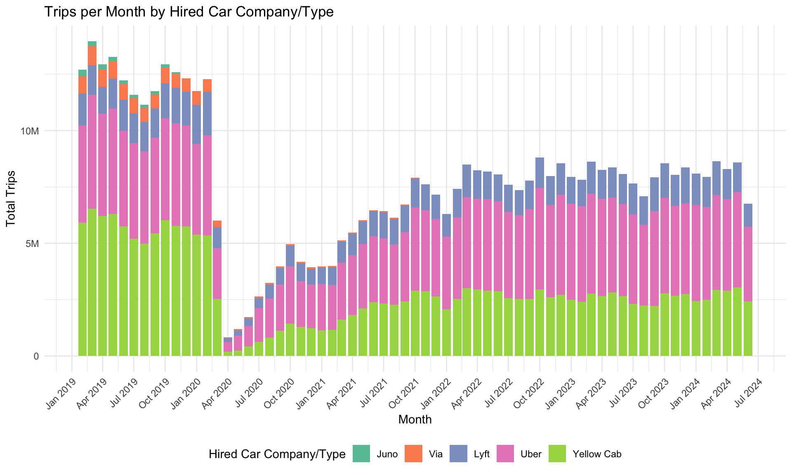
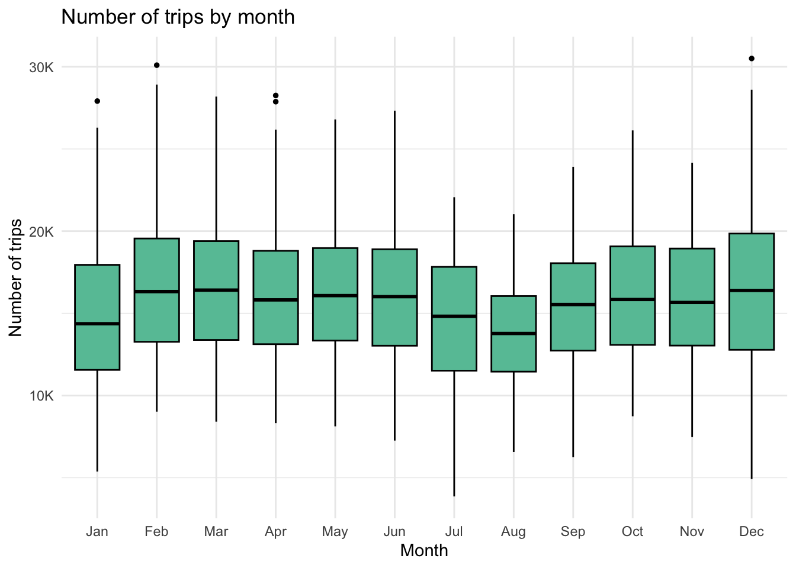
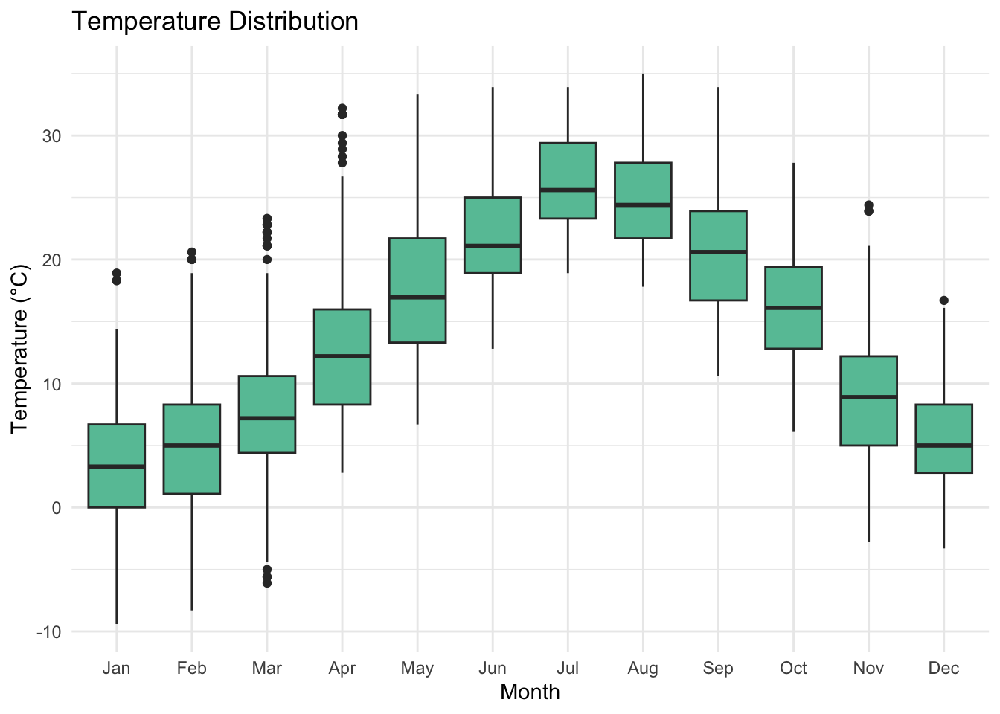
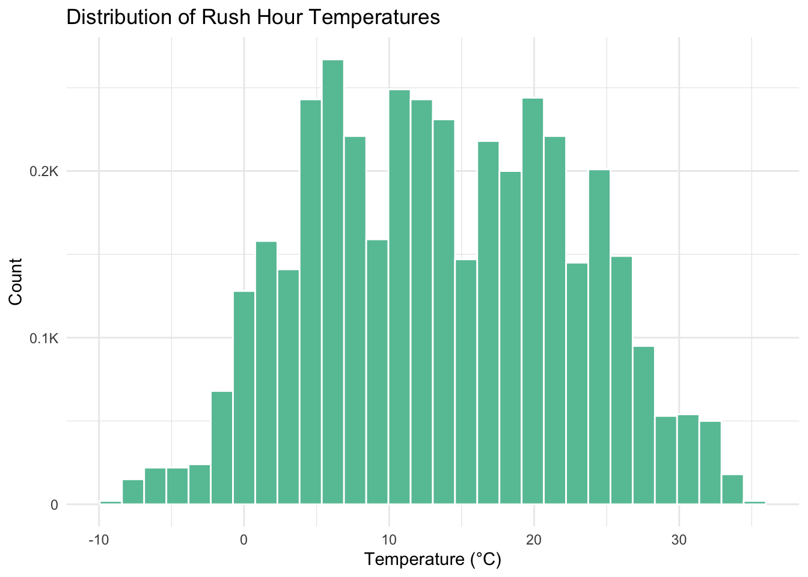

Code
# Add a month_abbr column.
df <- df |>
mutate(month_abbr = factor(month.abb[month], levels = month.abb)) # Add a month_abbr column.
df <- df |>
mutate(month_abbr = factor(month.abb[month], levels = month.abb)) Our intial plan was to contain data from 2019 to get a sense of a pre-COVID-19 Pandemic baseline against which we could compare our post-Pandemic data.
df |>
mutate(year_month = lubridate::ymd(paste(year, month, "01", sep = "-"))) |>
pivot_longer(cols=c(
"juno", "lyft", "uber", "via", "yellow"
), names_to="car_company", values_to="car_company_trips") |>
mutate(car_company = factor(car_company, levels = c("juno", "via", "lyft", "uber", "yellow"))) |>
group_by(year_month, car_company) |>
summarize(trips_per_month = sum(car_company_trips), .groups = "drop") |>
ggplot(aes(
x=year_month,
y=trips_per_month,
fill=car_company
)) +
geom_bar(stat = "identity", position = "stack") +
labs(
title = "Trips per Month by Hired Car Company/Type",
x = "Month",
y = "Total Trips",
fill = "Hired Car Company/Type"
) +
scale_fill_brewer(
palette = "Set2",
labels = c(
"yellow" = "Yellow Cab",
"juno" = "Juno",
"lyft" = "Lyft",
"via" = "Via",
"uber" = "Uber"
)
) +
scale_x_date(date_labels = "%b %Y", date_breaks = "3 months") +
scale_y_continuous(labels = millions) +
theme(axis.text.x = element_text(angle = 45, hjust = 1),
legend.position = "bottom") 
Three details jump out from an initial look at managing the Pandemic. First, we can see when the Pandemic hit in March, 2020. New York City schools closed on March 16, as cases went from a seven-day average of 0 per 100,000 inhabitants at the start of March to an initial peak of about 60 at the end of the month.[1] [2] The uncertainty over this initial wave halved the March ridership totals in comparison to February. Next, we can see that two of the FHVHV companies, though only holding small portions of the market, disappeared from the picture. Juno shut down operations in November 2019, with drivers being offered to join Lyft.[3] Via also stopped its ride-sharing operations in December 2021.[4] The cessation of rides from these two companies only lead us toward the most striking aspect of hired car and taxi usage in Manhattan. Not only did usage fall during the pandemic, but we seem to be in a new normal, averaging about 7.5 million rides a month across yellow cabs, Lyft, and Uber. These numbers have held since October 2021, suggesting it may make sense to abandon all data from before this time in order to get a good rhythm of usage.
first_color <- brewer.pal(8, "Set2")[1]
df |>
mutate(year_month = as.Date(format(date, "%Y-%m-01"))) |>
group_by(year_month) |>
summarize(
monthly_trips = sum(trip_count),
monthly_half_mile = sum(half_mile_trips),
monthly_one_mile = sum(one_mile_trips),
monthly_two_mile = sum(two_mile_trips),
monthly_three_mile = sum(three_mile_trips),
monthly_five_mile = sum(five_mile_trips),
monthly_more_than_five = monthly_trips - monthly_half_mile - monthly_one_mile - monthly_two_mile - monthly_three_mile - monthly_five_mile,
pct_half_mile = monthly_half_mile / monthly_trips,
pct_one_mile = monthly_one_mile / monthly_trips,
pct_two_mile = monthly_two_mile / monthly_trips,
pct_three_mile = monthly_three_mile / monthly_trips,
pct_five_mile = monthly_five_mile / monthly_trips,
pct_more_than_five = monthly_more_than_five / monthly_trips,
.groups = "drop"
) |>
pivot_longer(
cols = c(
"pct_half_mile",
"pct_one_mile",
"pct_two_mile",
"pct_three_mile",
"pct_five_mile",
"pct_more_than_five",
),
names_to = "pct_trip_distance_group",
values_to = "pct_trip_distance_count"
) |>
mutate(pct_trip_distance_group = factor(
pct_trip_distance_group, levels = c(
"pct_half_mile",
"pct_one_mile",
"pct_two_mile",
"pct_three_mile",
"pct_five_mile",
"pct_more_than_five"
))) |>
ggplot(aes(
x=year_month,
y= pct_trip_distance_count,
fill = pct_trip_distance_group
)) +
geom_bar(stat="identity", position="stack") +
labs(
title = "Distribution of Taxi and Uber/Lyft Trip Distances under Ten Miles in Manhattan",
x = "Month",
y = "Percentage of Trips",
fill = "Trip Distance"
) +
scale_x_date(date_labels = "%b %Y", date_breaks = "3 months") +
scale_fill_brewer(
palette = "GnBu",
labels = c(
"pct_more_than_five" = "Five to Ten Miles",
"pct_five_mile" = "Three to Five Miles",
"pct_three_mile" = "Two to Three Miles",
"pct_two_mile" = "One to Two Miles",
"pct_one_mile" = "Half Mile to One Miles",
"pct_half_mile" = "Under Half a Mile"
)
) +
scale_y_continuous(labels = label_percent()) +
theme(axis.text.x = element_text(angle = 45, hjust = 1),
legend.position = "bottom")
In addition to using hired cars less often after the Pandemic, perhaps as a consequence of less business-related travel because of flexible work schedules, we see a second behavioral change in the post-Pandemic era, even if it is slight: for the class of trips we are observing, they run longer. Trips of one mile make up a smaller percentage of the total, while trips of more than three miles make up a larger percentage of the total since the onset of the Pandemic.
Both analyses suggest certainly abandoning pre-Pandemic data as well as all of the 2020 data. While the shift in typical distances smooths out already at the beginning of 2021, the number of trips does not reach its new normal until around October 2021, suggesting that is the true step into the post-Pandemic order.
Moving forward, we will focus only on data from October 2021 onward, then.
# Filter out pre- and during-Pandemic data.
df <- df |>
filter(df$date >= as.Date("2021-10-01"))Why talk about monthly? We have to / diligence. Also to discard it because we don’t have all day.
perh. side thing on just Saturday.
filter df down to just rush hour on non-holiday weekdays.
We chose to limit our weather analysis to three variables: temperature, cloud cover, and rain. This provides three kinds of variables (numeric, categorical, boolean) while also giving a sense of easy to understand information that might be used by a traveler electing to walk or not. That is, a consideration of whether it is sunny or not is perhaps clearer to a person choosing to ride the cab than the dew point.
df |>
ggplot(aes(x = month_abbr, y = temperature)) +
geom_boxplot(fill=base_color) +
labs(
title = "Temperature Distribution",
x = "Month",
y = temp_label
) 
discussion
Cloud cover is measured in “oktas,” which we have converted to an ordinal categorical variable, that turns “less cloudy” into a positive measure when comparing two different weather reports.
| Value | Description |
|---|---|
| 0 | Clear |
| -1 | Few clouds |
| -2 | Scattered clouds |
| -3 | Broken clouds |
| -4 | Overcast |
df |>
group_by(month_abbr, cloud_cover) |>
tally() |>
group_by(month_abbr) |>
mutate(percentage = n / sum(n) * 100) |>
ungroup() |>
ggplot(aes(x = month_abbr, y = percentage, fill = as.factor(cloud_cover))) +
geom_bar(stat = "identity", position = "stack") +
labs(
title = "Percentage of Cloud Cover by Month",
x = "Month",
y = "Percentage",
fill = "Cloud Cover"
) +
scale_fill_brewer(
palette = "GnBu"
) +
theme_minimal()Cloud cover less obviously seasonal than temperature, and in general days are clear. Likely won’t tell us much otoh makes cloudy days jump out.
df |>
group_by(date = as.Date(date)) |>
summarize(
rain_day = any(rain == TRUE),
across(c(year, month_abbr), ~ first(.))
) |>
group_by(year, month_abbr) |>
summarize(
rainy_days = sum(rain_day), .groups = "drop",
) |>
group_by(month_abbr) |>
summarize(avg_rainy_days = mean(rainy_days)) |>
ggplot(aes(x = month_abbr, y = avg_rainy_days)) +
geom_bar(stat = "identity", fill = base_color) +
labs(
title = "Average Number of Days with at Least Trace Amounts of Rain",
x = "Month",
y = "Average Rainy Days"
)
Now that we have refocused our attention to a smaller subset of the data, we can look at some initial relationships between the two central taxi variables (trip_count and the various distance bands) and the three weather variables, (temperature, cloud_cover, and rain).
pivot_trip_distance_df <- df |>
mutate(
temperature = round(temperature)
) |>
mutate(
up_to_ten_mile_trips = trip_count - rowSums(across(ends_with("mile_trips")))
) |>
pivot_longer(
cols=c(ends_with("mile_trips")),
names_to="trip_type",
values_to="trip_type_count",
) |>
mutate(trip_type = factor(trip_type,
levels = c(
"half_mile_trips",
"one_mile_trips",
"two_mile_trips",
"three_mile_trips",
"five_mile_trips",
"up_to_ten_mile_trips"
),
labels = c(
"Up to Half-Mile Trips",
"Up to One-Mile Trips",
"Up to Two-Mile Trips",
"Up to Three-Mile Trips",
"Up to Five-Mile Trips",
"Up to Ten-Mile Trips"
),
ordered = TRUE))
pivot_trip_distance_df |>
group_by(trip_type, temperature) |>
summarize(
avg_trips_by_degree=mean(trip_type_count),
.groups = "drop"
) |>
ggplot(aes(temperature, avg_trips_by_degree)) +
geom_point(color=base_color, size=1, alpha=0.5) +
scale_y_continuous(
labels = thousands,
breaks = pretty_breaks(n = 3)
) +
geom_smooth(color=secondary_color, method="loess", linewidth=1, se=TRUE, alpha=0.15)+
# scale_fill_distiller(
# palette = "GnBu"
# ) +
labs(
title = "Average Hourly Trips Per Hour by Integral Temperature across Trip Distance",
y = "Average Hourly Trips",
x = temp_label,
fill = "Count"
) +
facet_wrap(~ trip_type, ncol = 3, nrow = 2, scales="free_y")`geom_smooth()` using formula = 'y ~ x'
pivot_trip_distance_df |>
group_by(trip_type, cloud_cover) |>
summarize(
avg_trips = mean(trip_type_count, na.rm = TRUE),
se = sd(trip_type_count, na.rm = TRUE) / sqrt(n()),
.groups = "drop"
) |>
ggplot(aes(x = cloud_cover, y = avg_trips, fill = cloud_cover)) +
geom_bar(stat = "identity", position = "dodge") +
facet_wrap(~trip_type, scales = "free_y") +
scale_y_continuous(label=comma)+
scale_fill_brewer(palette = "GnBu") +
labs(
title = "Average Hourly Trips by Cloud Cover and Trip Distance",
x = "Cloud Cover",
y = "Average Hourly Trips",
fill = "Cloud Cover"
)+
theme(
axis.title.x = element_blank(),
axis.text.x = element_blank(),
legend.position = "bottom"
) 
pivot_trip_distance_df |>
group_by(trip_type, rain) |>
summarize(
avg_trips = mean(trip_type_count, na.rm = TRUE),
se = sd(trip_type_count, na.rm = TRUE) / sqrt(n()),
.groups = "drop"
) |>
ggplot(aes(x = rain, y = avg_trips, fill = rain)) +
geom_bar(stat = "identity", position = "dodge") +
# geom_errorbar(aes(ymin = avg_trips - se, ymax = avg_trips + se),
# width = 0.2, position = position_dodge(0.9)) +
scale_y_continuous(label=comma)+
scale_fill_brewer(palette = "Set2") +
labs(
title = "Average Hourly Trips by Rain and Trip Distance",
x = "Rain",
y = "Average Hourly Trips",
fill = "Rain"
)+
facet_wrap(~trip_type, scales = "free_y") +
theme(
axis.title.x = element_blank(),
axis.text.x = element_blank(),
legend.position = "bottom"
) 
This is establishing the relationship. Standardize:
( x - min ) / (max - min)
weather: rain y/n , cloud cover categorical , temp numeric
trips: count, cat distance chunks
two variable fights: - scatterplot - boxplot/cat vs num
pivot_trip_distance_df |>
mutate(
temperature_change_since_prev_day = round(temperature_change_since_prev_day)
) |>
filter(
temperature > 25,
) |>
# group_by(trip_type) |>
ggplot(aes(temperature_change_since_prev_day, trip_count_change_since_prev_week)) +
geom_hex() +
scale_fill_viridis_c(direction=-1) +
# scale_fill_distiller(palette="GnBu", direction=-1) +
labs(
title = "Change in trip by change in temp",
x = paste("Change in ", temp_label, "Since 24 Hours Ago"),
y = "Change in Trips since a week ago",
fill = "trips"
)#+
# facet_wrap(~trip_type, scales="free_y")The patterns of taxi usage complicate how we can try to analyze weather effects. That is, the strong weekly cycle of increasing ridership as the week goes on contrasts with the relative sense of a “nice” day. If we typically take a cab on Friday, but elect not to on a specific Friday because the weather is nice, we are not probably comparing that Friday’s weather to the previous Friday’s. Instead, we are likely comparing to yesterday’s weather or even this morning’s weather.
This means that while taxi ridership has to be compared against data from a week previous, weather data has to be compared against data from a day previous.
Chat piece about doing this weird choice.
prob for d3. start with r charts though to see wht seems salient.
In order to determine variations in taxi usage, we needed to establish a baseline “normal” in order to verify fluctuations in the data. How can we infer an abberration if we don’t know what normal is? How does cab usage regularly fluctate across the week according to work-life patterns, and how does it fluctuate by season?
As mentioned previously, we suspected from our initial charts that cab usage returned to somewhat of a normal around October 2021. The calendar view of taxi usage supports that view.
df |>
mutate(day = wday(date, label = TRUE),
month = month(date, label = TRUE),
year = year(date),
day_label = factor(substr(day, 1, 2),
levels = c("Su", "Mo", "Tu", "We", "Th", "Fr", "Sa"))) |>
group_by(year, month, day) |>
summarize(avg_trips = median(trip_count), .groups = 'drop') |>
ggplot(aes(x = day, y = month, fill = avg_trips)) +
geom_tile(color = "white") +
scale_fill_gradient(low = "white", high = "red", name = "Avg Trips") +
labs(
title = "Average Trips by Day of the Week and Month",
x = "Day of the Week",
y = "Month"
) +
theme_minimal() +
facet_wrap(~year, ncol=6)
We can see that in general for 2021, perhaps starting with March, the daily and monthly fluctuations were established that have persisted into 2024, but from the slightly lighter hue of the 2021 numbers, we know that ridership was still establishing its new norms. Compare, for example, Fridays and Saturdays in March and April. October 2021 appears the first month with a weekly rhythm and total numbers in line with future Octobers.
plot1 <- df |>
filter(date < as.Date("2020-03-01")) |>
mutate(day=wday(date, label=T),
month=month(date, label=T),
year=year(date)) |>
group_by(year,month,day) |>
summarize(avg_trips = median(trip_count), .groups = 'drop') |>
ggplot(aes(x=as.factor(day), y=as.factor(month), fill=avg_trips)) +
geom_tile(color="white") +
scale_fill_gradient(low = "white", high = "red", name = "N trips") +
labs(title = "Pre-pandemic (Jan 2019 -- Feb 2020)", x = "Day of the week", y = "Month") +
theme_minimal() +
theme(plot.title = element_text(size=11),
legend.key.size = unit(0.5, 'cm'),
legend.title = element_text(size=10))
plot2 <- df |>
filter(date >= as.Date("2021-10-01")) |>
mutate(day=wday(date, label=T),
month=month(date, label=T),
year=year(date)) |>
group_by(year,month,day) |>
summarize(avg_trips = median(trip_count), .groups = 'drop') |>
ggplot(aes(x=as.factor(day), y=as.factor(month), fill=avg_trips)) +
geom_tile(color="white") +
scale_fill_gradient(low = "white", high = "red", name = "N trips") +
labs(title = "Post-pandemic (Oct 2021 -- Jul 2024)", x = "Day of the week", y = "Month") +
theme_minimal() +
theme(plot.title = element_text(size=11),
legend.key.size = unit(0.5, 'cm'),
legend.title = element_text(size=10))
(plot1 / plot2) + plot_annotation(title="Average number of trips by day of the week and month")continue describing months and day of week add the combined (full time data) plot here as well. This shows that it makes a lot of sense to break off from the pandemic data bc there is such a difference! The sheer volume in ridership obscures pattens
plot1 <- df |>
filter(date >= as.Date("2021-10-01")) |>
mutate(day = wday(date, label = TRUE))|>
group_by(day, hour) |>
summarize(avg_trips = mean(trip_count), .groups = 'drop') |>
ggplot(aes(x = day, y = hour, fill = avg_trips)) +
geom_tile(color = "white") +
scale_fill_gradient(low = "white", high = "red", name = "N Trips") +
labs(
title = "Pre-pandemic (Jan 2019 - Feb 2020)",
x = "Day of the Week",
y = "Hour"
) +
scale_y_continuous(breaks=seq(0,23, by=3))+
theme_minimal()+
theme(plot.title = element_text(size=11),
legend.key.size = unit(0.5, 'cm'),
legend.title = element_text(size=10))
plot2 <- df |>
filter(date < as.Date("2020-03-01")) |>
mutate(day = wday(date, label = TRUE))|>
group_by(day, hour) |>
summarize(avg_trips = mean(trip_count), .groups = 'drop') |>
ggplot(aes(x = day, y = hour, fill = avg_trips)) +
geom_tile(color = "white") +
scale_fill_gradient(low = "white", high = "red", name = "N Trips") +
labs(
title = "Post-pandemic (Oct 2021-Jul 2024)",
x = "Day of the Week",
y = "Hour"
) +
scale_y_continuous(breaks=seq(0,23, by=3))+
theme_minimal()+
theme(plot.title = element_text(size=11),
legend.key.size = unit(0.5, 'cm'),
legend.title = element_text(size=10))
(plot1 / plot2) + plot_annotation(title="Average number of trips by day of the week and hour")
describe day of week and hour -workday consistency -uptick in usage fri sat night Realization that it makes sense to compare usage to the week before at the same time since there is relative consistency here – greater variation bt hours/ diff days of the week Also, note that its pretty consistent pre-pandemic vs post